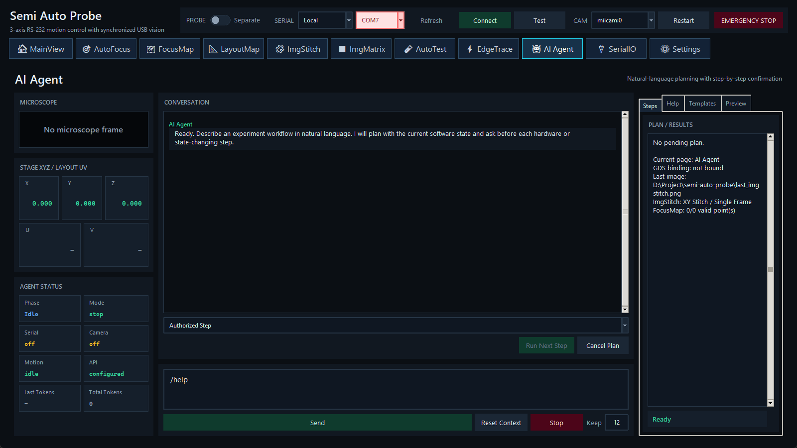

用当前软件状态回答问题、生成受约束计划，并通过本地安全检查逐步执行。

| 模式 | 行为 |
|---|---|
| Conversation Only | 回答、解释和预览计划；不会执行步骤。 |
| Authorized Step | 默认模式。计划生成后，操作员逐次单击 Run Next Step。 |
| Auto Step | 自动调度后续可执行步骤；每一步仍重新读取实时状态并运行本地 blocker/参数检查。 |
本地确定性路由优先处理 /help [topic]、/status、/check、/open <page> 和 /run measurement。中文“如何运行 autofocus？”等帮助意图只解释操作，不会变成硬件动作。
/open 接受界面可见名 MainView、LayoutMap、SerialIO、Settings，也兼容内部名 Main、LayoutBond、Communication、Config。
Agent 可读取帮助与状态、检查当前 measurement workflow、打开页面、按 pulse 移动载台、移动到已选 GDS 目标、运行当前点 AutoFocus、保存单帧、执行当前 ImgStitch/FocusMap 设置、关联最近图像到 LayoutMap，以及运行当前 AutoTest/Mapping measurement。
ImgMatrix、EdgeTrace、相机连接与手动仪器配置目前由 Agent 提供帮助/导航，不直接修改。Agent 不发送任意 raw controller 命令，不执行 Python，不自由写文件，也不替操作员设置未确认的电压、电流或 compliance。
/run measurement 记录 workflow 与扫描 geometry fingerprint；确认前配置改变会使计划 blocked，必须重新生成。Cancel Plan 丢弃剩余步骤，但当前硬件动作继续。Stop 请求停止 Agent 启动的 AutoFocus、FocusMap、ImgStitch、AutoTest/Mapping 或 EdgeTrace，并取消剩余步骤；Agent stage/GDS move 会触发急停。
Settings 的 agent_api_key/model/base_url/timeout 非空时优先使用；否则读取 SEMI_AUTO_PROBE_AGENT_API_KEY、..._BASE_URL、..._MODEL、..._TIMEOUT_SECONDS。接口为 OpenAI-compatible /chat/completions。在线失败会显示原因并退到本地规则。